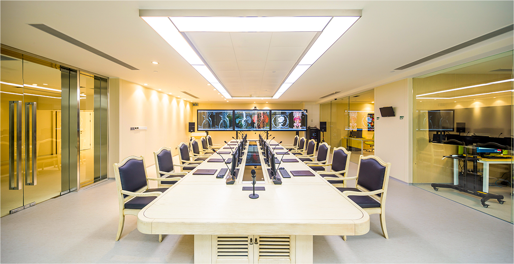
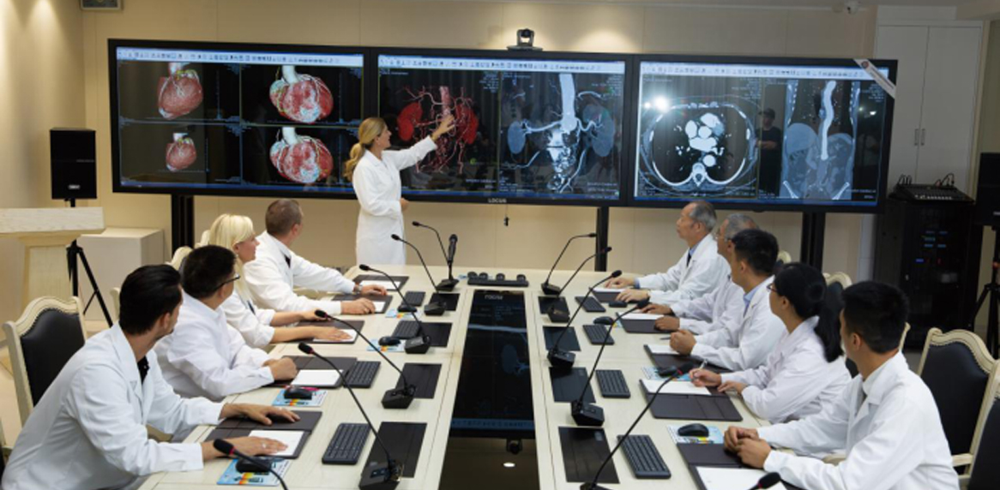

2019年8月13日
连CCTV都力荐的国际级的健康管理中心，竟然就在从都！
从大湾区开始，国人的生命质量与国际接轨
随着国内人口结构的变化和居民生活水平的提高，健康与养生已然成为了生活中首当其冲的话题，大健康产业也受到 广泛的关注。中国社科院等机构联合发布《大健康产业蓝皮书：中国大健康产业发展报告（2018）》指出，大健康产业将 成为中国经济发展的新方向，是具有利国利民重要意义的产业；在《粤港澳大湾区发展规划纲要》中，重点强调了塑造健 康湾区。
正是在这样的时代背景下，从都生命健康管理中心于2018年在从都国际庄园正式启幕，将国际顶级的健康管理服务带 到国内，并且引入国际先进自然医学疗法，刷新了大湾区的健康服务业的高度。
这样一座国际级健康管理中心的落成，成功地吸引了国内主流媒体的注意，近期，一部关于从都生命健康管理中心的纪录 片在CCTV和香港卫视播出，让人们通过荧幕了解它的实力和魅力。
从都生命健康管理中心：让世界的制高点成为中国的起点
从都生命健康管理中心代表了目前国际上的最高的专业水准。这里拥有跨学科国际权威专家团队，利用国际科研级先 进医疗设备、深入、精准、全面地了解个体的健康状况，从生物学、心理学、社会学及环境医学的角度进行多维度分析， 找出潜在的患病风险，继而以世界领先的国际自然医学疗法为主，配合中医以及运动、饮食、心理、睡眠、等生活方式干 预治疗手段，制定出整合干预健康管理方案，以提升客户身体机能与生命品质。不仅如此，中心还成立从都生命健康管理 研究院，并且定期举办国际健康论坛，推动健康管理领域在国内的持续发展。

自中心落成开始，国内健康管理领域就站在了领先世界的制高点，而国民们也正式迎来了不出国门享受顶级健康服务的新 时代。
感受从都，我们第一次如此深入地了解自己
如果你来到从都生命健康管理中心，第一印象一定是感叹风景之秀美，东方智慧和国际视野在这里完美融合。进入中 心，换上轻松而舒适的检查服后，将有专人指引你开始一段深入了解自己的健康之旅。
来自世界各地和中国的专家会先对客人进行面诊，充分了解个人的生活环境和生活习惯。接下来，是与验血、身体扫 描、基因筛查相关的一系列检查。客人甚至可以从荧幕上看到专家3D彩色还原建模，直观了解身体内部。而专家们则通过 智能化实验室的筛查、大数据库对比分析等结果，评估客人的健康情况，进一步进行面诊沟通。还有体适能检查，用来评 估关节和肌肉的状况。最后，所有专家将集中会诊，为客人定制一套科学的健康管理方案，甚至包括了针对个人健康饮食 方案以及运动方案。

整个全程私密而贴心，定制化的服务更加聚焦个体的身体差异，令身体这里的客人第一次如此深入、确切地了解自己 的身体现状，以及未来可能会出现的健康风险。在这里，生命被视为各种功能密切联系而对待。最为重要的是，他们在这 里找到了保持健康和活力的方法，用健康和自信拥抱未来的生活！
向国人传播科学的健康观念，引导个体选择合适自己的健康管理方式
生活中，人人都关注健康，但是对于科学健康知识的了解却不够深入；人人都购买健康产品，却免不了在不合适自己 的产品上花冤枉钱。未来健康产业的方向，将是根据个体情况而提供定制化的方案，正如客人们来到从都生命健康管理中 心锁体验的服务一样。
比如，是否到健身房运动就是正确的选择？吃保健品是否就能够确保健康？一种养生方式是不是对不同的个体都适用 ？这一切，都可在从都生命健康管理找到科学的答案。尤其是在建立充分了解个体的基础上，多对一定制的健康管理方案， 将让您的生命质量得到真正的大幅度提升。
由从都生命健康管理中心开始，爱上科学和自然疗法为指导的养生方式，看见自己多年后依旧青春而充满活力的样子。
地址：中国广东省广州市从化区从都大道1号
电话：020-8787001 400181193
网址：www.imperialspringshealth.com